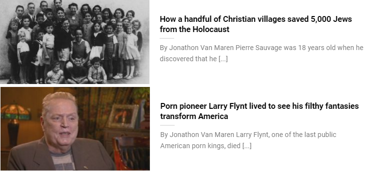
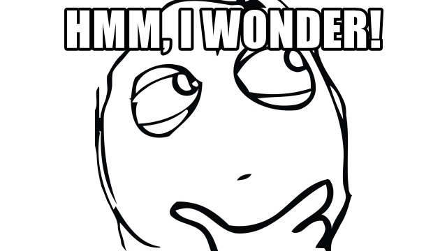

Cuckservatism in One Pic
February 22nd, 2021
My article exploring the Servative response to the Cuck Power Play performed by Erin O'Toole to Derek Sloan. I decided to take a look at the author, Jonathan Van Maren's article list. Some of them are fine, if impotent, anti-pornography stuff. This isn't represented by the Servative Party, so he's just shouting into a void, but still, it's fine.
However, I stumbled onto this gem, that I think sums up Cuckservatism better than anything else ever. This was from this guys article list, unedited. It's so perfect I almost wonder if it's subersive.


It's amazing how, ocassionally, Cuck Propaganda is indistinguishable from mine.